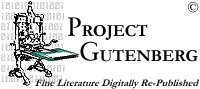

The Project Gutenberg CD
August 2003 Edition
This CD contains a set of electronic books, or eBooks, from
Project Gutenberg. Project
Gutenberg is one of the oldest all-electronic information
providers on the Internet. Project Gutenberg is committed to
producing freely available literature in multiple formats and
languages and has more than 8000 titles available.
The eBooks on the CD consist mainly of text and HTML files, with a
few movie files. As for any reading material, Project
Gutenberg recommends that children receive guidance from adults in
determining what books are appropriate for them.
|
You are encouraged to give away copies of this CD, and the eBooks on
it. Read the license text in the eBooks for other uses. Consider
giving someone you know a gift of great literature!
|
For a complete listing of all Project Gutenberg
books, see our complete index.
You can also visit the main Project Gutenberg pages online at
www.gutenberg.net find other
books of interest. This award-winning site includes information about
how to make a donation to Project Gutenberg, how to
subscribe to mailing lists to hear about new books, and how to help create new eBooks. For more specific information,
email us at info@pglaf.org
Browse Files on this CD
Files are arranged by year, with somewhat cryptic filenames. So,
you can use this listing to browse by author, title, or by folder.
Complete information on the CD's contents can be found on this spreadsheet (OpenOffice format -- downloading and installing OpenOffice is free of charge). A CSV version of this file can be found here.
Make a Donation
Project Gutenberg relies on donations from readers! We have just a
few paid staff, who help to coordinate volunteers, post new eBooks
and perform copyright research. The Project Gutenberg Literary
Archive Foundation is a 501(c)(3) charitable organization with federal
tax ID #64-6221541. You can donate money to Project Gutenberg in several
ways:
- Send a check or money order. 100% of your donation goes to
Project Gutenberg (except for small bank fees for non-US funds). Our
postal address:
Project Gutenberg Literary Archive Foundation
809 North 1500 West
Salt Lake City, UT 84116
Telephone: (801) 596 1887
- NetworkForGood accepts major credit cards
with US mailing addresses. 100% of donated funds go to Project
Gutenberg.
- PayPal donations are
accepted. An account with PayPal is required. Select "Send Money,"
then specify donate@gutenberg.net as the
recipient. Or, try this
direct link to donate. You will be presented with Project
Gutenberg's information. PayPal does charge transaction fees.
Donations can be made in non-US funds.
For more information about making a donation, visit our fundraising pages, view
our Donation How-To or email donate@gutenberg.net.
|
CREDITS
Project Gutenberg 'Best Of' CD, August 2003 Edition
609 books, 692 files
CD Project Volunteers: Aaron Cannon, Daniel Callahan (Maintainer)
Project Gutenberg CEO: Greg Newby
Project Gutenberg Founder: Michael Hart
This project would not have been possible without the help and support
of the many volunteers of Project Gutenberg and The Distributed Proofreaders.
|
|
COPYRIGHT NOTICES:
CD compilation
© 2003 Project Gutenberg

This work is licensed under a
Creative Commons License.
A summary of the license can also be viewed here, and the full text of the license can be viewed here.
Commercial use of this CD is granted under the following conditions:
Verbatim copies of the Project Gutenberg 'Best Of' CD may be sold provided that 20% of the gross profits are donated to
Project Gutenberg.
See the licensing information provided with individual e-text files for
more information.
Copyright and licensing information regarding individual Project Gutenberg e-text files are provided in the header
and/or footer of each document.
|